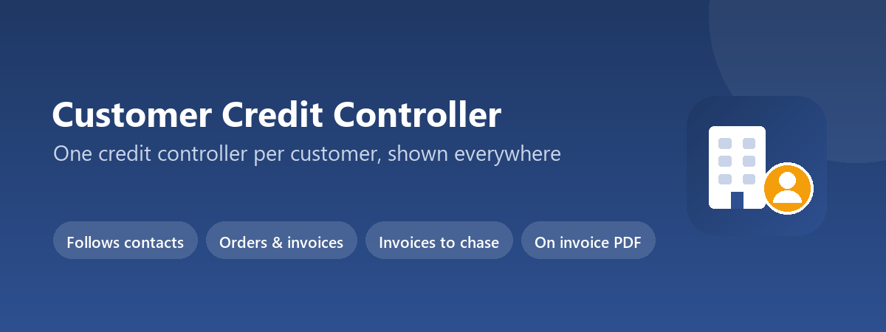

Gives each customer a credit controller, kept the same on all its contacts, sales orders and invoices.
Choose the credit controller on the customer's company, next to the salesperson. Every contact person of that company follows it automatically, and it is shown on the customer's sales orders and invoices. Each controller opens one filter to see the overdue invoices of their own customers.
👤 Set once per customerPick the credit controller on the company and all its contacts, at every level, follow it. New contacts get it at once. |
📄 Orders and invoicesThe credit controller is shown on sales orders and customer invoices, and you can search and group by it. |
🔔 Invoices to chaseThe My Invoices to Chase filter lists the overdue, unpaid invoices of the controller's own customers. |
👥 My credit customersA filter on contacts shows each controller the customers they look after. |
🖨 On the invoice PDFOptionally print the controller's name and e-mail on invoices, so the customer knows who to contact. |
🔄 Sync for imported dataAn action on contacts copies the controller from companies to their contacts, for data loaded from elsewhere. |
Odoo 18.0 • Community & Enterprise • depends on Sales and Invoicing • Licence LGPL-3
Odoo implementation and development. thecodelegion.com